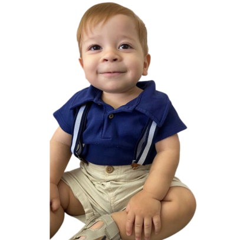

Luiz Carneiro Ramos de Farias
O QUE PODEMOS DIZER DO LUIZ
Um Sorriso de Esperança e Resiliência
Luiz Carneiro Ramos de Farias é uma luz radiante de alegria e esperança em nossas vidas. Nascido em
02/02/2022, este pequeno grande guerreiro tem conquistado corações com seu sorriso contagiante e espírito
brincalhão. Seu rosto iluminado por um sorriso constante é um testemunho de sua resiliência e força
inabalável.
Apesar dos desafios impostos pela Atrofia Muscular Espinhal (AME), Luiz é um exemplo de determinação e
positividade. Ele encara cada dia com a mesma coragem que inspira a todos ao seu redor. Suas risadas são
como melodias de esperança, lembrando-nos de que a alegria pode ser encontrada mesmo nas circunstâncias
mais desafiadoras.
Luiz é um explorador incansável do mundo ao seu redor, encontrando alegria nas pequenas coisas e
ensinando-nos a valorizar cada momento precioso. Seu espírito brincalhão nos recorda a importância de
nunca deixar a criança interior desaparecer, não importa quais obstáculos possam surgir.
Além de ser um raio de sol em nossos dias, Luiz é um símbolo de amor e unidade. Sua família e comunidade
se uniram para apoiá-lo em sua jornada, demonstrando o poder da solidariedade e do amor incondicional.
Eles são os pilares que sustentam Luiz em sua jornada, e sua dedicação é admirável.
A história de Luiz é uma lição profunda sobre a força do espírito humano, a importância da esperança e a
capacidade de encontrar beleza na adversidade. Ele nos recorda que a alegria e a resiliência podem
coexistir, mesmo em face de desafios extraordinários.
A jornada de Luiz é um lembrete de que a vida é preciosa e que, com amor, apoio e generosidade, podemos
fazer a diferença na vida daqueles que enfrentam dificuldades. Junte-se a nós nesta missão de dar a Luiz a
oportunidade de um futuro brilhante. Cada ato de generosidade é um raio de esperança que ilumina o caminho
dele e nos lembra da beleza da compaixão humana.
Luiz, com seu sorriso cativante e espírito inquebrável, é uma inspiração para todos nós. Sua jornada é uma
celebração da vida e uma lição sobre o poder da resiliência e da alegria. Com você ao nosso lado, estamos
determinados a escrever um capítulo de superação na história de Luiz. Juntos, somos mais fortes, e juntos,
podemos transformar vidas

A família de Luiz Carneiro Ramos de Farias é uma força inabalável que tem estado ao lado deste pequeno grande guerreiro em sua jornada contra a Atrofia Muscular Espinhal (AME). Juntos, eles personificam o amor, a determinação e a coragem que são essenciais para enfrentar desafios extraordinários. Desde o momento em que Luiz foi diagnosticado com AME, sua família se uniu em uma jornada que exigiria não apenas força física, mas também uma incrível força emocional. Cada membro da família desempenha um papel vital no apoio a Luiz e na busca pelo melhor tratamento possível. Os pais de Luiz são exemplos de amor incondicional e dedicação. Eles enfrentam os desafios diários com resiliência e perseverança, buscando incansavelmente todas as opções disponíveis para melhorar a vida de Luiz. Seu compromisso é uma inspiração para todos que têm o privilégio de conhecê-los.
Nossa campanha de doação não é apenas uma demonstração de solidariedade com Luiz; é também um gesto de apoio à sua incrível família. Com cada contribuição, estamos fortalecendo o alicerce dessa família que luta incansavelmente pelo bem-estar de Luiz. A família de Luiz é uma inspiração para todos nós, lembrando-nos do poder do amor, da união e da esperança. Eles nos mostram que, mesmo nas circunstâncias mais difíceis, podemos encontrar força uns nos outros e criar uma luz brilhante de esperança para iluminar o caminho.

A importância do tratamento na jornada de crianças como Luiz Carneiro Ramos de Farias, diagnosticado com Atrofia Muscular Espinhal (AME), não pode ser subestimada. A AME é uma doença genética rara e degenerativa que afeta a produção de uma proteína vital chamada SMN, essencial para o funcionamento dos neurônios motores responsáveis pelos gestos voluntários vitais do corpo, como respirar, engolir e se mover. Para crianças como Luiz, cada movimento é uma batalha, cada respiração é uma vitória e cada dia é uma jornada de coragem. No entanto, há esperança em forma de tratamentos, e é aí que a importância deles se destaca. O tratamento com o medicamento Zolgensma, uma terapia genética inovadora, oferece a promessa de uma vida mais saudável e feliz para crianças com AME. Esta terapia age corrigindo a deficiência genética responsável pela AME, permitindo que as células produzam a proteína SMN que falta nos pacientes com a doença. Essa correção genética pode interromper a progressão da AME e melhorar a qualidade de vida dos pacientes.
No entanto, o desafio crucial que enfrentamos é o alto custo associado ao Zolgensma, tornando-o inacessível para muitas famílias. É amplamente reconhecido como um dos medicamentos mais caros do mundo, com um valor que pode atingir a marca dos milhões de reais. É aqui que entra a importância das doações e do apoio da comunidade. Cada contribuição nos aproxima da nossa meta de proporcionar a Luiz e a outras crianças com AME a oportunidade de receberem o tratamento de que precisam. Cada doação é um passo em direção a um futuro mais brilhante. O tratamento não é apenas uma questão médica; é um raio de esperança, uma oportunidade de vencer a AME e alcançar marcos importantes de desenvolvimento. É uma chance de brincar, aprender, crescer e criar memórias preciosas. A importância do tratamento transcende as fronteiras da medicina; é um ato de solidariedade, amor e compaixão. É uma demonstração de que, quando nos unimos, podemos fazer a diferença na vida de crianças como Luiz, dando-lhes a oportunidade de um futuro brilhante.
O medicamento Zolgensma é conhecido como o tratamento mais caro do mundo, e seu custo é verdadeiramente extraordinário. Para Luiz e outras crianças que enfrentam a Atrofia Muscular Espinhal (AME), o Zolgensma representa uma esperança inestimável de uma vida mais saudável e feliz. No entanto, essa esperança é acompanhada de um desafio monumental: o valor necessário para garantir esse tratamento. O custo do Zolgensma é uma barreira significativa para o acesso a este medicamento revolucionário. Estamos diante da necessidade de arrecadar 6.1 milhões de reais para proporcionar a Luiz a oportunidade de receber o tratamento que ele merece. Este valor pode parecer insuperável, mas acreditamos na força da comunidade e na compaixão humana. A jornada de Luiz é uma demonstração de coragem, amor e determinação, e sua família está unida em sua busca por uma vida melhor para ele. Agora, estamos estendendo a mão para você, nossa comunidade, para se juntar a nós nesta missão crucial.
Cada doação, independentemente do valor, é um passo em direção ao nosso objetivo. Cada contribuição é um raio de esperança que ilumina o caminho de Luiz e de outras crianças que enfrentam a AME. Com sua ajuda, estamos construindo uma ponte para um futuro onde a AME não determine o destino, mas sim a determinação, o amor e a compaixão. A luta de Luiz é um lembrete de que, quando nos unimos em solidariedade, somos capazes de superar os desafios mais difíceis. Acreditamos que, com o apoio de pessoas como você, podemos alcançar nossa meta de 6.1 milhões de reais e dar a Luiz a oportunidade de uma vida cheia de possibilidades. Cada centavo conta, e cada doação nos aproxima de um futuro mais brilhante. Sua generosidade é a chave para esta transformação, e agradecemos do fundo dos nossos corações por se juntar a nós nesta jornada de esperança e cura. Com sua doação, estamos mais próximos de dar a Luiz e a outras crianças uma chance de vencer a AME e viver uma vida plena.
AJUDE O LUIZ NESSA MISSÃO
Pequenas doações têm um grande impacto na vida de alguém, aja hoje!
No mundo de hoje, muitos de nós têm o desejo de fazer a diferença, de causar um impacto positivo, mas às vezes nos sentimos intimidados pela escala dos problemas que enfrentamos. No entanto, é importante lembrar que pequenas ações podem ter um impacto monumental nas vidas das pessoas, e é isso que torna nossa causa tão especial. Você pode se perguntar como uma pequena doação pode fazer a diferença real na vida de alguém. A resposta é simples: é o poder da comunidade, a união de corações generosos e o compromisso de criar um mundo melhor. Cada doação, não importa o tamanho, representa um ato de amor, compaixão e solidariedade. Quando pessoas se unem com um propósito comum, o impacto é multiplicado. Sua contribuição se soma a de outros, formando um elo inquebrável de apoio. Aqui, na jornada do Luiz contra a Atrofia Muscular Espinhal (AME), acreditamos na força das pequenas doações. Cada centavo doado nos aproxima da nossa meta de proporcionar ao Luiz e a outras crianças com AME a oportunidade de receber o tratamento de que precisam. Cada ato de generosidade é um passo em direção a um futuro mais brilhante. Então, se você já se perguntou como pode fazer a diferença, saiba que pequenas doações têm o poder de transformar vidas. Não subestime o impacto que sua contribuição pode ter. Aja hoje, faça sua doação e junte-se a nós na missão de criar um mundo onde a esperança e a solidariedade prevalecem. Pequenas doações, quando somadas, são capazes de mover montanhas e iluminar o caminho de alguém. Sua ação é o que torna possível a realização de sonhos e a construção de futuros melhores. Aja hoje e seja parte desta incrível jornada de mudança e renovação.